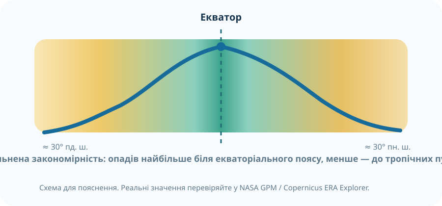

«Африка найжаркіша, бо найближча до Сонця» — це правильне пояснення?
Оберіть найсильнішу гіпотезу. Після практичної роботи поверніться до неї.
Спочатку дані, потім правило
Порівняйте три джерела. Відкрийте їх у нових вкладках і знайдіть Африку.
місячні суми опадівCopernicus ERA Explorer
30-річні середніNASA POWER
точкові метеоданіEarth NullSchool
вітри й тиск
Як змінюється кількість опадів від екватора до тропіків?
NASA Earth Observatory зазначає, що в Сахелі річна кількість опадів різко змінюється з широтою: від менш ніж 200 мм на півночі до приблизно 2000 мм у вологіших районах Західної та Центральної Африки. На глобальних картах GPM добре видно сезонне переміщення поясу рясних дощів на північ і південь від екватора.

Інтерактив «широта → очікувана вологість»
дуже волого
Біля екватора тепле вологе повітря часто піднімається, охолоджується й дає рясні конвективні опади.
Це причинна модель, а не прогноз погоди для конкретної точки.
П'ять кліматичних важелів Африки
Широта
Велика частина материка лежить між тропіками, де Сонце протягом року стоїть високо над горизонтом.
Тиск і повітря
Біля екватора переважає висхідний рух вологого повітря; у тропічних широтах — опускання сухого повітря.
Пасати
Вони переносять повітря від субтропічних максимумів до екваторіальної зони низького тиску.
Течії
Холодні Канарська та Бенгельська течії зменшують випаровування і сприяють сухості західних узбереж.
Рельєф
Висота знижує температуру, а навітряні схили можуть отримувати більше опадів.
Сезонність
Пояс найбільших опадів мігрує разом із зоною максимального прогрівання.
Складіть доказову кліматичну характеристику
Працюйте за NASA GPM або ERA Explorer. Оберіть три райони: екваторіальний, тропічно-пустельний і субтропічний.
Крок 1. Екваторіальна Африка
Наприклад, район басейну Конго. Запишіть: температура, сезонність опадів, можливий тип повітряних мас.
Крок 2. Сахара або Наміб
Порівняйте з екваторіальним районом. Який чинник найкраще пояснює дефіцит опадів?
Крок 3. Субтропічний край
Оберіть північне узбережжя або район Кейптауна. Чим сезонність відрізняється?
Крок 4. Висновок
Сформулюйте правило, але обов'язково додайте виняток або обмеження.
Для завершення потрібні всі чотири записи.
Тепер збираємо правило
Чому Африка найжаркіша
Не через «меншу відстань до Сонця», а через географічне положення: значна частина материка лежить у низьких широтах і впродовж року отримує великі суми сонячної радіації.
Чому опади нерівномірні
Головну широтну закономірність створює загальна циркуляція атмосфери, але океанічні течії, рельєф і сезонне зміщення поясів тиску модифікують її.
Екватор
Висхідні потоки теплого вологого повітря → конденсація → часті й рясні опади.
Тропіки
Опускання сухого повітря в субтропічних областях високого тиску → слабка хмарність і дефіцит опадів.
Доведіть твердження
Твердження: «Висока температура Африки має широтну закономірність, а розподіл опадів — широтну основу з важливими регіональними відхиленнями».
C — Claim
E — Evidence
R — Reasoning
Міні-дослідження «дві Африки»
- Опрацюйте тему підручника: § «Чому Африка — найжаркіший материк Землі».
- У NASA POWER або ERA Explorer оберіть дві точки Африки на близькій широті, але з різним зволоженням.
- Запишіть 2–3 кліматичні показники та поясніть відмінність через течії, рельєф або панівні вітри.